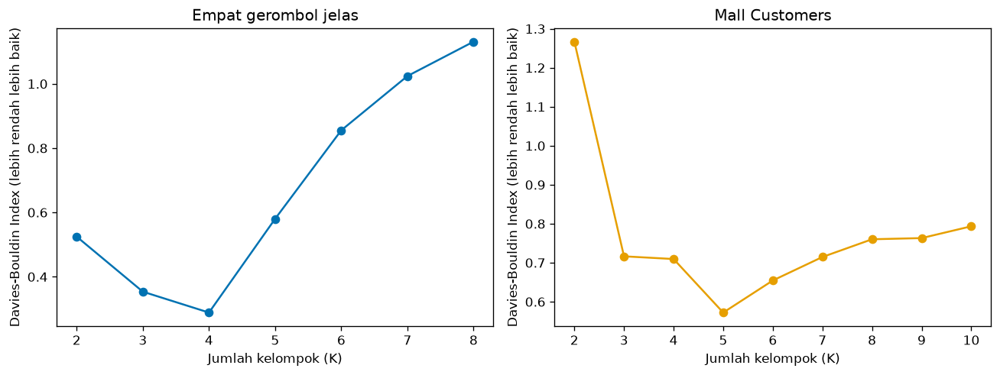
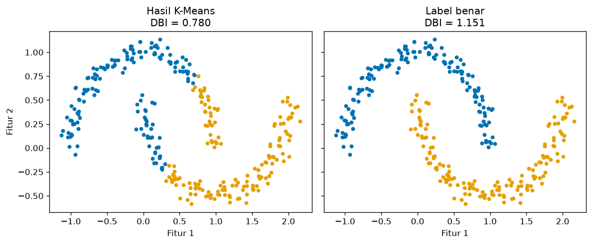

Bab 6 — Davies-Bouldin Index¶
Learning Objectives¶
Setelah mempelajari bab ini, kamu mampu:
- Menjelaskan tujuan Davies-Bouldin Index (DBI) dan ide "kesamaan antar kelompok".
- Menjelaskan sebaran dalam kelompok (intra-cluster scatter) dan keterpisahan antar kelompok (inter-cluster separation).
- Menghitung DBI secara manual pada data kecil dan mencocokkannya dengan
davies_bouldin_score. - Menafsirkan nilai DBI dan menjelaskan mengapa lebih rendah lebih baik.
- Memakai DBI untuk membandingkan beberapa nilai K.
- Menyebutkan kelebihan dan keterbatasan DBI, termasuk bentuk kelompok yang tidak cocok.
- Mengenali kesalahan umum dalam memakai DBI.
Introduction¶
Silhouette (Bab 5) sangat informatif tetapi mahal: ia butuh jarak antar semua pasangan titik. Davies-Bouldin Index mengambil jalan pintas: ia hanya memakai centroid tiap kelompok. Ide dasarnya tetap sama dengan yang kita bangun sejak Bab 2: kelompok bagus itu kompak dan berjauhan.
DBI menjawab pertanyaan: "Untuk tiap kelompok, siapa kelompok lain yang paling mirip dengannya? Seberapa mirip?" Jika kelompok paling mirip pun masih jauh dan berbeda, hasil clustering bagus. Jika ada dua kelompok yang sebarannya lebar dan pusatnya berdekatan, DBI buruk.
Fundamental Concepts¶
| Istilah | Arti |
|---|---|
| Davies-Bouldin Index (DBI) | Rata-rata, untuk tiap kelompok, dari "kemiripan terburuknya" dengan kelompok lain. Makin rendah makin baik |
| Intra-cluster scatter \( S_i \) | Sebaran kelompok \( i \): rata-rata jarak titik ke centroid-nya (sama dengan cohesion, Bab 2) |
| Inter-cluster separation \( M_{ij} \) | Jarak antara centroid kelompok \( i \) dan \( j \) |
| Cluster similarity \( R_{ij} \) | Seberapa "mirip" atau tumpang tindih kelompok \( i \) dan \( j \): \( (S_i + S_j) / M_{ij} \) |
| Dispersion | Sebaran titik di sekitar pusatnya |
Detailed Explanation¶
Ide intuitif¶
Bayangkan dua kelompok sebagai dua bola. Setiap bola punya jari-jari (seberapa lebar sebarannya) dan pusat. Dua bola mudah dibedakan jika:
- jari-jarinya kecil (kompak), dan
- pusatnya berjauhan.
Jika jari-jari besar dan pusat berdekatan, kedua bola bertumpuk dan sulit dibedakan. DBI mengukur persis itu: jumlah jari-jari dibagi jarak pusat. Angka kecil berarti kedua bola terpisah rapi.
Langkah menghitung DBI¶
- Hitung centroid tiap kelompok.
- Hitung sebaran \( S_i \) tiap kelompok: rata-rata jarak titik ke centroid-nya.
- Hitung jarak antar centroid \( M_{ij} \) untuk setiap pasangan.
- Untuk setiap pasangan, hitung kemiripan \( R_{ij} = \dfrac{S_i + S_j}{M_{ij}} \).
- Untuk tiap kelompok \( i \), ambil kemiripan terburuk: \( D_i = \max_{j \neq i} R_{ij} \), yaitu dengan kelompok yang paling mirip dengannya.
- DBI adalah rata-rata \( D_i \) seluruh kelompok.
Mengapa lebih rendah lebih baik?¶
\( R_{ij} \) besar bila pembilang (sebaran) besar atau penyebut (jarak antar pusat) kecil. Itu situasi yang buruk. Karena DBI adalah rata-rata dari kemiripan terburuk, DBI kecil berarti setiap kelompok punya "pesaing terdekat" yang masih jauh dan berbeda. DBI paling kecil yang mungkin adalah 0. Tidak ada batas atas.
Hati-hati arah \"baik\"
Silhouette dan Calinski-Harabasz: makin tinggi makin baik. Davies-Bouldin: makin rendah makin baik. Banyak kesalahan terjadi karena arahnya tertukar.
Mengapa memakai "terburuk" (max), bukan rata-rata?¶
Kelompok yang bagus harus terpisah dari semua kelompok lain, bukan hanya dari rata-ratanya. Jika satu kelompok menempel pada kelompok lain, DBI memberi hukuman lewat \( \max \), walau kelompok-kelompok lain jauh. Seperti rantai yang kekuatannya ditentukan mata rantai terlemah.
Sensitivitas terhadap struktur kelompok¶
DBI berbasis centroid dan jarak Euclidean, sehingga:
- Cocok untuk kelompok bulat dan berukuran mirip.
- Kurang cocok untuk kelompok melengkung, memanjang, atau berbentuk tak beraturan, karena centroid tidak mewakili bentuknya.
- Mengabaikan kepadatan dan noise. Rata-rata jarak ke centroid dipengaruhi titik pencilan.
- Tidak mengukur hubungan antar titik tertentu, hanya ringkasan per kelompok.
DBI bukan ukuran universal
DBI mengukur dispersi dan keterpisahan berbasis centroid. Ia tidak cocok sebagai satu-satunya ukuran untuk setiap struktur kelompok, misalnya hasil DBSCAN pada bentuk bebas.
Kelebihan dan keterbatasan¶
Kelebihan
- Sederhana dan cepat: hanya butuh centroid, bukan semua pasangan titik.
- Tidak butuh label benar.
- Tidak bergantung pada skala keseluruhan (rasio sebaran terhadap jarak).
- Terbatas dari bawah (minimal 0), mudah dibandingkan antar K.
Keterbatasan
- Menyukai kelompok bulat dan kompak.
- Hanya memakai jarak Euclidean (di scikit-learn).
- Tidak ada batas atas, dan tidak ada ambang "bagus" yang baku.
- Dipengaruhi outlier karena centroid adalah rata-rata.
- Tidak memberi informasi per titik (berbeda dengan Silhouette).
- Bisa menyukai K yang lebih besar atau kecil secara tidak wajar pada data tanpa struktur.
Mathematical Foundation¶
Untuk \( K \) kelompok. Sebaran kelompok \( i \) (rata-rata jarak titik ke centroid \( \mathbf{c}_i \)):
Jarak antar centroid:
Kemiripan dua kelompok dan nilai terburuk tiap kelompok:
Davies-Bouldin Index:
Penjelasan simbol: \( K \) jumlah kelompok, \( |C_i| \) jumlah anggota kelompok \( i \), \( \lVert \cdot \rVert \) jarak Euclidean. Notasi \( \max_{j \neq i} \) berarti "ambil nilai terbesar di antara semua kelompok \( j \) yang bukan \( i \) sendiri".
Perhitungan manual¶
Sembilan titik, tiga kelompok. Kelompok 0: \( (1,1),\ (2,1),\ (1,2) \). Kelompok 1: \( (6,5),\ (7,5),\ (6,6) \). Kelompok 2: \( (1,8),\ (2,8),\ (1,9) \).
Langkah 1: centroid. \( \mathbf{c}_0 = (1{,}333;\ 1{,}333) \), \( \mathbf{c}_1 = (6{,}333;\ 5{,}333) \), \( \mathbf{c}_2 = (1{,}333;\ 8{,}333) \).
Langkah 2: sebaran. Ketiga kelompok adalah salinan bentuk yang sama, sehingga \( S_0 = S_1 = S_2 = 0{,}654 \) (hitungannya sama dengan cohesion pada Bab 2: rata-rata dari \( 0{,}471;\ 0{,}745;\ 0{,}745 \)).
Langkah 3: jarak antar centroid.
- \( M_{01} = \sqrt{5^2 + 4^2} = \sqrt{41} = 6{,}403 \)
- \( M_{02} = \sqrt{0^2 + 7^2} = 7{,}000 \)
- \( M_{12} = \sqrt{5^2 + 3^2} = \sqrt{34} = 5{,}831 \)
Langkah 4: kemiripan.
- \( R_{01} = \dfrac{0{,}654 + 0{,}654}{6{,}403} = 0{,}204 \)
- \( R_{02} = \dfrac{1{,}308}{7{,}000} = 0{,}187 \)
- \( R_{12} = \dfrac{1{,}308}{5{,}831} = 0{,}224 \)
Langkah 5: terburuk tiap kelompok.
- \( D_0 = \max(R_{01}, R_{02}) = \max(0{,}204;\ 0{,}187) = 0{,}204 \)
- \( D_1 = \max(R_{10}, R_{12}) = \max(0{,}204;\ 0{,}224) = 0{,}224 \)
- \( D_2 = \max(R_{20}, R_{21}) = \max(0{,}187;\ 0{,}224) = 0{,}224 \)
Langkah 6: rata-rata. \( \text{DBI} = \dfrac{0{,}204 + 0{,}224 + 0{,}224}{3} \approx 0{,}218 \). (Kode memakai angka yang tidak dibulatkan dan menghasilkan 0,2177.)
Dua kelompok yang paling "berdekatan" di sini adalah kelompok 1 dan 2 (jarak centroid 5,831), sehingga merekalah yang menentukan \( D_1 \) dan \( D_2 \).
Python Implementation¶
Skrip lengkapnya ada di examples/level-5/06_davies_bouldin_index.py, dan notebook-nya di notebooks/level-5/06-davies-bouldin-index.ipynb. Setiap potongan kode diikuti penjelasannya.
Konteks masalah: menghitung DBI manual dan dengan scikit-learn, membandingkan beberapa K, dan mengenali keterbatasannya.
Dataset:
X_tiny: sembilan titik, tiga kelompok.make_blobs: empat gerombol (400 titik), dan beberapa pasang kelompok dengan jarak atau sebaran berbeda.make_moonsdan data acak untuk keterbatasan.- Mall Customers.
Pustaka: NumPy, pandas, Matplotlib, scikit-learn.
Bagian A — Siapkan alat¶
import numpy as np
import pandas as pd
import matplotlib.pyplot as plt
from sklearn.cluster import KMeans
from sklearn.datasets import make_blobs, make_moons
from sklearn.metrics import davies_bouldin_score, silhouette_score
from sklearn.preprocessing import StandardScaler
Penjelasan: davies_bouldin_score adalah fungsi DBI dari scikit-learn. silhouette_score kita impor sebagai pembanding.
Bagian B — Sembilan titik¶
# Sembilan titik di tiga kelompok
X_tiny = np.array(
[
[1, 1], [2, 1], [1, 2], # kelompok 0
[6, 5], [7, 5], [6, 6], # kelompok 1
[1, 8], [2, 8], [1, 9], # kelompok 2
],
dtype=float,
)
labels_tiny = np.array([0, 0, 0, 1, 1, 1, 2, 2, 2])
Penjelasan: sembilan titik, dan label yang kita tentukan sendiri (0, 1, 2).
Bagian C — DBI manual¶
def dbi_manual(X, labels, verbose=False):
"""Davies-Bouldin Index dihitung langkah demi langkah."""
ks = np.unique(labels)
centroids = np.array([X[labels == k].mean(axis=0) for k in ks])
# S_i: rata-rata jarak titik ke centroid kelompoknya (sebaran kelompok)
S = np.array([np.linalg.norm(X[labels == k] - centroids[idx], axis=1).mean() for idx, k in enumerate(ks)])
# M_ij: jarak antar centroid
M = np.linalg.norm(centroids[:, None, :] - centroids[None, :, :], axis=2)
# R_ij = (S_i + S_j) / M_ij untuk i != j; D_i = nilai R_ij terbesar
n = len(ks)
R = np.zeros((n, n))
for i in range(n):
for j in range(n):
if i != j:
R[i, j] = (S[i] + S[j]) / M[i, j]
D = R.max(axis=1)
if verbose:
print("Centroid:\n", centroids.round(3))
print("S_i :", S.round(3).tolist())
print("M_ij:\n", M.round(3))
print("R_ij:\n", R.round(3))
print("D_i :", D.round(3).tolist())
return D.mean()
dbi_tiny = dbi_manual(X_tiny, labels_tiny, verbose=True)
print(f"DBI manual = {dbi_tiny:.4f}")
Centroid:
[[1.333 1.333]
[6.333 5.333]
[1.333 8.333]]
S_i : [0.654, 0.654, 0.654]
M_ij:
[[0. 6.403 7. ]
[6.403 0. 5.831]
[7. 5.831 0. ]]
R_ij:
[[0. 0.204 0.187]
[0.204 0. 0.224]
[0.187 0.224 0. ]]
D_i : [0.204, 0.224, 0.224]
DBI manual = 0.2177
Penjelasan baris demi baris:
ks = np.unique(labels)mendaftar kelompok.centroidsadalah rata-rata tiap kelompok (X[labels == k].mean(axis=0)).Sadalah sebaran: untuk tiap kelompok, jarak titik ke centroid (np.linalg.norm(..., axis=1)) lalu.mean().M = np.linalg.norm(centroids[:, None, :] - centroids[None, :, :], axis=2)menghitung jarak setiap pasang centroid sekaligus. Bentuk[:, None, :]dan[None, :, :]membuat NumPy memasangkan setiap centroid dengan setiap centroid lain (broadcasting). Hasilnya matriksK × Kdengan nol di diagonal.- Perulangan ganda mengisi
R[i, j] = (S[i] + S[j]) / M[i, j]untuki != j. Diagonal dilewati karena membagi dengan jarak nol tidak terdefinisi. D = R.max(axis=1)mengambil nilai terbesar di tiap baris, yaitu kemiripan terburuk tiap kelompok. Diagonal bernilai 0 sehingga tidak mengganggu.D.mean()adalah DBI.- Parameter
verbose=Truemencetak langkah antara supaya kita bisa mencocokkannya dengan hitungan manual.
Bagian D — Mencocokkan dengan scikit-learn¶
Penjelasan: davies_bouldin_score(X, labels) menerima data dan label, sama seperti metrik lain. Hasilnya harus sama dengan fungsi manual kita.
Bagian E — DBI untuk beberapa K¶
X_blobs, _ = make_blobs(n_samples=400, centers=4, cluster_std=1.0, random_state=42)
rows = []
for k in range(2, 9):
labels = KMeans(n_clusters=k, n_init=10, random_state=42).fit_predict(X_blobs)
rows.append({"K": k, "Davies-Bouldin": davies_bouldin_score(X_blobs, labels),
"Silhouette": silhouette_score(X_blobs, labels)})
blob_table = pd.DataFrame(rows).set_index("K")
print(blob_table.round(3).to_string())
print("K dengan DBI terendah :", int(blob_table["Davies-Bouldin"].idxmin()))
print("K dengan Silhouette tertinggi:", int(blob_table["Silhouette"].idxmax()))
Davies-Bouldin Silhouette
K
2 0.525 0.592
3 0.354 0.758
4 0.289 0.794
5 0.580 0.695
6 0.855 0.556
7 1.024 0.440
8 1.131 0.334
K dengan DBI terendah : 4
K dengan Silhouette tertinggi: 4
Penjelasan: untuk K = 2 sampai 8 kita menjalankan K-Means dan menghitung DBI serta Silhouette. idxmin() memberi K dengan DBI terendah dan idxmax() memberi K dengan Silhouette tertinggi (arah "baik" kedua metrik berlawanan).
Bagian F — Skala keseluruhan¶
labels_blobs4 = KMeans(n_clusters=4, n_init=10, random_state=42).fit_predict(X_blobs)
print(f"DBI data asli : {davies_bouldin_score(X_blobs, labels_blobs4):.4f}")
print(f"DBI data x 10 : {davies_bouldin_score(X_blobs * 10, labels_blobs4):.4f}")
Penjelasan: kita menghitung DBI pada data asli dan data yang dikali 10, dengan label yang sama. Sebaran dan jarak antar centroid sama-sama dikali 10, sehingga rasionya tidak berubah.
Bagian G — Pengaruh jarak dan sebaran¶
# Dua pasang kelompok: sebaran sama, jarak antar pusat berbeda
rows = []
for gap in (3, 6, 12):
X_pair, _ = make_blobs(n_samples=300, centers=[[0, 0], [gap, 0]], cluster_std=1.0, random_state=42)
labels = KMeans(n_clusters=2, n_init=10, random_state=42).fit_predict(X_pair)
rows.append({"Jarak antar pusat": gap, "Davies-Bouldin": davies_bouldin_score(X_pair, labels)})
print(pd.DataFrame(rows).set_index("Jarak antar pusat").round(3).to_string())
# Dua pasang kelompok: jarak sama, sebaran berbeda
rows = []
for std in (0.5, 1.0, 2.0):
X_pair, _ = make_blobs(n_samples=300, centers=[[0, 0], [8, 0]], cluster_std=std, random_state=42)
labels = KMeans(n_clusters=2, n_init=10, random_state=42).fit_predict(X_pair)
rows.append({"Sebaran (std)": std, "Davies-Bouldin": davies_bouldin_score(X_pair, labels)})
print(pd.DataFrame(rows).set_index("Sebaran (std)").round(3).to_string())
Davies-Bouldin
Jarak antar pusat
3 0.739
6 0.403
12 0.202
Davies-Bouldin
Sebaran (std)
0.5 0.152
1.0 0.302
2.0 0.595
Penjelasan: eksperimen pertama menggeser dua pusat sampai 3, 6, dan 12 satuan dengan sebaran tetap. Eksperimen kedua menetapkan jarak pusat 8 satuan dan mengubah sebaran (cluster_std) menjadi 0,5; 1,0; dan 2,0. centers=[[0, 0], [gap, 0]] menentukan pusat secara eksplisit.
Bagian H — Grafik DBI terhadap K¶
palette = ["#0072B2", "#E69F00", "#009E73", "#CC79A7", "#D55E00", "#56B4E9"]
df = pd.read_csv("data/mall_customers.csv")
features = ["Annual Income (k$)", "Spending Score (1-100)"]
X_mall = StandardScaler().fit_transform(df[features])
mall_dbi = {k: davies_bouldin_score(X_mall, KMeans(n_clusters=k, n_init=10, random_state=42).fit_predict(X_mall))
for k in range(2, 11)}
fig, axes = plt.subplots(1, 2, figsize=(11, 4.2))
axes[0].plot(blob_table.index, blob_table["Davies-Bouldin"], marker="o", color=palette[0])
axes[0].set_title("Empat gerombol jelas")
axes[1].plot(list(mall_dbi.keys()), list(mall_dbi.values()), marker="o", color=palette[1])
axes[1].set_title("Mall Customers")
for ax in axes:
ax.set_xlabel("Jumlah kelompok (K)")
ax.set_ylabel("Davies-Bouldin Index (lebih rendah lebih baik)")
plt.tight_layout()
plt.show()

Penjelasan: panel kiri untuk empat gerombol, panel kanan untuk Mall Customers (data distandarkan, K = 2 sampai 10). Kita menghitung DBI Mall Customers dengan dictionary comprehension {k: ... for k in range(2, 11)}.
Bagian I — Keterbatasan¶
X_moons, y_moons = make_moons(n_samples=300, noise=0.06, random_state=42)
km_moons = KMeans(n_clusters=2, n_init=10, random_state=42).fit_predict(X_moons)
print(f"DBI K-Means (memotong bulan) : {davies_bouldin_score(X_moons, km_moons):.3f}")
print(f"DBI label benar : {davies_bouldin_score(X_moons, y_moons):.3f}")
# Data tanpa kelompok alami
X_uniform = np.random.default_rng(42).uniform(-10, 10, size=(400, 2))
uniform_dbi = {k: davies_bouldin_score(X_uniform, KMeans(n_clusters=k, n_init=10, random_state=42).fit_predict(X_uniform))
for k in range(2, 9)}
print("DBI data acak:", {k: round(v, 3) for k, v in uniform_dbi.items()})
DBI K-Means (memotong bulan) : 0.780
DBI label benar : 1.151
DBI data acak: {2: 1.083, 3: 0.842, 4: 0.77, 5: 0.814, 6: 0.872, 7: 0.815, 8: 0.773}
fig, axes = plt.subplots(1, 2, figsize=(10, 4.2), sharey=True)
panels = [
(km_moons, f"Hasil K-Means\nDBI = {davies_bouldin_score(X_moons, km_moons):.3f}"),
(y_moons, f"Label benar\nDBI = {davies_bouldin_score(X_moons, y_moons):.3f}"),
]
for ax, (labels, title) in zip(axes, panels):
for k in range(2):
ax.scatter(X_moons[labels == k, 0], X_moons[labels == k, 1], s=14, color=palette[k])
ax.set_title(title)
ax.set_xlabel("Fitur 1")
axes[0].set_ylabel("Fitur 2")
plt.tight_layout()
plt.show()

Penjelasan: pada moons kita membandingkan DBI K-Means dengan DBI label benar. Pada data acak kita melihat apakah DBI memberi sinyal jelas ketika tidak ada kelompok. Label benar hanya dipakai untuk dinilai.
Bagian J — Mall Customers¶
print({k: round(v, 3) for k, v in mall_dbi.items()})
best_k = min(mall_dbi, key=mall_dbi.get)
print("K dengan DBI terendah pada Mall Customers:", best_k, f"({mall_dbi[best_k]:.3f})")
{2: 1.267, 3: 0.716, 4: 0.71, 5: 0.572, 6: 0.655, 7: 0.715, 8: 0.76, 9: 0.763, 10: 0.793}
K dengan DBI terendah pada Mall Customers: 5 (0.572)
Penjelasan: hasil DBI Mall Customers dicetak, dan min(mall_dbi, key=mall_dbi.get) mengambil K dengan DBI terendah.
Code Explanation¶
| Bagian kode | Peran |
|---|---|
S (rata-rata jarak ke centroid) |
Sebaran tiap kelompok |
M (jarak antar centroid) |
Keterpisahan antar kelompok |
R = (S[i] + S[j]) / M[i, j] |
Kemiripan dua kelompok |
R.max(axis=1) |
Kelompok paling mirip untuk tiap kelompok |
D.mean() |
DBI |
davies_bouldin_score(X, labels) |
DBI siap pakai |
Pelatihan vs penilaian
KMeans(...).fit_predict(X) adalah pelatihan. davies_bouldin_score(X, labels) adalah penilaian: ia hanya menghitung centroid dari label yang diberikan. Ia tidak membaca centroid milik model K-Means.
How to Run¶
Dari folder utama proyek (setelah mengaktifkan lingkungan virtual):
Skrip mencetak output ke terminal dan menyimpan dua gambar ke docs/assets/level-5/. Notebook interaktifnya:
Semua output pada bab ini berasal dari eksekusi nyata dengan Python 3.14, NumPy 2.5.4, pandas 3.1.1, scikit-learn 1.9.1, dan Matplotlib 3.11.2.
Expected Output¶
Output setiap langkah ditampilkan langsung di bawah kodenya pada bagian Python Implementation.
Gambar yang dihasilkan:
Interpretasi output¶
1. Hitungan manual cocok. Centroid \( (1{,}333;\ 1{,}333) \), \( (6{,}333;\ 5{,}333) \), \( (1{,}333;\ 8{,}333) \). \( S_i = 0{,}654 \) untuk ketiganya. Jarak antar centroid: \( M_{01} = 6{,}403 \), \( M_{02} = 7{,}000 \), \( M_{12} = 5{,}831 \). Kemiripan: \( R_{01} = 0{,}204 \), \( R_{02} = 0{,}187 \), \( R_{12} = 0{,}224 \). Terburuk tiap kelompok: \( D = [0{,}204;\ 0{,}224;\ 0{,}224] \). DBI manual = 0,2177, sama dengan davies_bouldin_score (0,2177).
2. Beberapa K pada empat gerombol.
| K | Davies-Bouldin | Silhouette |
|---|---|---|
| 2 | 0,525 | 0,592 |
| 3 | 0,354 | 0,758 |
| 4 | 0,289 | 0,794 |
| 5 | 0,580 | 0,695 |
| 6 | 0,855 | 0,556 |
| 7 | 1,024 | 0,440 |
| 8 | 1,131 | 0,334 |
DBI terendah dan Silhouette tertinggi sama-sama di K = 4, sesuai empat gerombol. Perhatikan: berbeda dengan Inertia, DBI naik ketika K melebihi jumlah gerombol, karena kelompok yang terbelah punya pusat yang berdekatan (penyebut \( M_{ij} \) kecil).
3. Skala keseluruhan. DBI data asli 0,2887 dan data dikali 10 juga 0,2887. DBI tidak berubah karena sebaran dan jarak sama-sama dikali 10. (Berbeda dengan Inertia pada Bab 3.) Namun perbedaan skala antar fitur tetap memengaruhi jarak, sehingga penyamaan skala tetap perlu.
4. Jarak dan sebaran.
| Jarak antar pusat (sebaran tetap 1,0) | DBI |
|---|---|
| 3 | 0,739 |
| 6 | 0,403 |
| 12 | 0,202 |
| Sebaran (jarak pusat tetap 8) | DBI |
|---|---|
| 0,5 | 0,152 |
| 1,0 | 0,302 |
| 2,0 | 0,595 |
DBI turun saat pusat makin berjauhan, dan naik saat sebaran makin lebar. Keduanya sesuai rumus \( R_{ij} = (S_i + S_j)/M_{ij} \). Pada pasangan dengan jarak 8, melebarkan sebaran dari 0,5 ke 2,0 menaikkan DBI sekitar empat kali lipat (0,152 ke 0,595).
5. Moons. K-Means yang memotong bulan sabit mendapat DBI 0,780, sedangkan label benar mendapat 1,151, yaitu lebih buruk. Seperti Silhouette (Bab 5), DBI menyukai kelompok bulat dan menilai bentuk bulan sabit sebagai "tidak rapi" karena jarak antar centroid kedua bulan tidak besar dibanding sebarannya.
6. Data acak. DBI: 1,083 (K = 2), 0,842, 0,770 (K = 4), 0,814, 0,872, 0,815, 0,773 (K = 8). Nilai terendah di K = 4 (0,770), tetapi K = 8 (0,773) nyaris sama. Tidak ada minimum yang tegas, sama seperti pada Elbow Method. Dibandingkan dengan empat gerombol jelas (0,289), semua nilai pada data acak jauh lebih tinggi. Jadi besarnya DBI memberi petunjuk tentang adanya struktur, tetapi posisi minimum pada data tanpa struktur tidak bisa dipercaya.
7. Mall Customers. DBI: 1,267 (K = 2), 0,716, 0,710, 0,572 (K = 5), 0,655, 0,715, 0,760, 0,763, 0,793. Minimum tegas di K = 5, sama dengan Silhouette (Bab 5) dan siku (Bab 4). Tiga metrik yang berbeda menunjuk K yang sama, dan itu menambah keyakinan.
Practical Examples¶
Memilih K dengan cepat. DBI murah dihitung, cocok untuk membandingkan banyak K pada data yang besar, ketika Silhouette terlalu mahal.
Menyaring kandidat. Gunakan DBI untuk menyingkirkan K yang jelas buruk, lalu periksa kandidat tersisa dengan Silhouette dan gambar.
Memantau segmentasi. Hitung DBI pada tiap pembaruan segmentasi pelanggan. Kenaikan DBI mengisyaratkan segmen mulai tumpang tindih.
Membandingkan dua inisialisasi. Bandingkan dua hasil K-Means (misalnya random dan k-means++) dengan DBI.
Hands-on Exercises¶
- Hitung manual \( R_{01} \) pada
X_tinydan cocokkan dengan output (0,204). - Geser titik \( (7,5) \) menjadi \( (9,5) \) pada kelompok 1. Berapa DBI-nya? Mengapa berubah?
- Hitung DBI
X_tinybila K-Means memakai K = 2 dan K = 4. Bandingkan dengan 0,2177. - Hitung DBI Mall Customers untuk K = 4 dan K = 6 dan bandingkan dengan K = 5.
- Pada pasangan dua kelompok berjarak 8, ubah sebaran menjadi 3,0. Berapa DBI-nya?
- Mengapa DBI turun bila kelompok makin berjauhan, dan naik bila sebaran melebar?
- Mengapa DBI tidak cocok dipakai untuk menilai kelompok bentuk bulan sabit?
Jawaban
Hasil nomor 2 sampai 5 berasal dari eksekusi nyata.
- \( R_{01} = \dfrac{0{,}654 + 0{,}654}{6{,}403} = \dfrac{1{,}308}{6{,}403} = \) 0,204.
- DBI menjadi 0,3165 (sebelumnya 0,2177). Titik yang ditarik jauh membuat kelompok 1 lebih lebar (\( S_1 \) naik) dan menggeser centroid-nya, sehingga \( R \) yang melibatkan kelompok 1 naik.
- K = 2: 0,5944. K = 4: 0,3269. Keduanya lebih buruk dari K = 3 (0,2177). K = 3 sesuai dengan tiga kelompok yang sebenarnya.
- K = 4: 0,710, K = 6: 0,655, K = 5: 0,572. K = 5 terendah.
- DBI menjadi 0,789. Sebaran 3,0 pada jarak pusat 8 membuat kelompok saling bertumpuk, jauh lebih buruk dari sebaran 1,0 (0,302).
- \( R_{ij} = (S_i + S_j)/M_{ij} \): jarak antar pusat \( M_{ij} \) di penyebut. Makin besar penyebut, \( R \) makin kecil. Sebaran \( S \) di pembilang: makin besar, \( R \) makin besar.
- DBI memakai centroid dan rata-rata jarak ke centroid. Pada bulan sabit, jarak antar centroid kedua bulan tidak besar dibanding sebaran titik ke centroid-nya, sehingga \( R_{ij} \) besar walau kedua bulan sebenarnya terpisah. Pada data kita, label benar mendapat DBI 1,151, lebih buruk dari K-Means yang memotong bentuk (0,780).
Troubleshooting¶
Masalah teknis¶
| Masalah | Penyebab | Solusi |
|---|---|---|
ValueError: Number of labels is 1. Valid values are 2 to n_samples - 1 |
Hanya satu kelompok | Pastikan minimal 2 kelompok |
| DBI = 0 | Semua titik tiap kelompok berimpit dengan centroid-nya | Biasanya tanda data duplikat atau sangat sedikit |
| Hasil mengejutkan setelah menyaring noise | X dan labels tidak disaring dengan mask yang sama |
Saring keduanya |
| Angka berbeda dari output di bab | Versi pustaka atau seed berbeda | Pakai random_state=42 dan bandingkan polanya |
| Mengira DBI tinggi itu bagus | Arah metrik tertukar | Ingat: DBI rendah = baik |
Kesalahan umum¶
- Menukar arah. DBI lebih rendah lebih baik, kebalikan dari Silhouette dan Calinski-Harabasz.
- Memakai DBI untuk kelompok non-bulat tanpa menyadari bias bentuknya.
- Memakai DBI sendirian. Padukan dengan Silhouette, gambar, dan pengetahuan domain.
- Lupa menyamakan skala antar fitur. Fitur berskala besar mendominasi jarak.
- Membandingkan DBI antar dataset berbeda seolah-olah punya patokan yang sama.
- Mengira minimum DBI pasti K yang benar. Pada data acak, minimum tidak tegas.
- Mengira DBI memberi tahu kelompok mana yang buruk. DBI hanya satu angka, sedangkan Silhouette plot memberi rincian.
- Memberi hasil DBSCAN langsung ke DBI tanpa memikirkan noise (label
-1). Centroid "noise" tidak bermakna.
Summary¶
- Davies-Bouldin Index menilai tiap kelompok dengan kelompok yang paling mirip dengannya, lalu merata-ratakannya: \( \text{DBI} = \dfrac{1}{K}\sum_i \max_{j \neq i} \dfrac{S_i + S_j}{M_{ij}} \).
- \( S_i \) adalah sebaran (rata-rata jarak ke centroid), dan \( M_{ij} \) jarak antar centroid. DBI rendah berarti kelompok kompak dan berjauhan. Minimumnya 0, tanpa batas atas.
- Hitungan manual pada sembilan titik menghasilkan 0,2177, sama dengan
davies_bouldin_score. - Pada empat gerombol, DBI terendah (0,289) dan Silhouette tertinggi (0,794) sama-sama di K = 4. Berbeda dengan Inertia, DBI naik bila K melampaui jumlah gerombol.
- DBI turun saat jarak pusat membesar (0,739 pada jarak 3, 0,202 pada jarak 12) dan naik saat sebaran melebar (0,152 pada std 0,5, 0,595 pada std 2,0).
- DBI tidak bergantung pada skala keseluruhan (data × 10 tetap 0,2887).
- Keterbatasan: berbasis centroid dan Euclidean, menyukai kelompok bulat (pada moons label benar 1,151 vs K-Means 0,780), dan tidak memberi minimum tegas pada data acak.
- Pada Mall Customers, DBI terendah di K = 5 (0,572), sejalan dengan elbow dan Silhouette.
Bab berikutnya: Bab 7 membahas Calinski-Harabasz Index, metrik berbasis rasio dispersi antar kelompok terhadap dispersi dalam kelompok, dengan arah "lebih tinggi lebih baik".
References¶
- Davies, D. L., & Bouldin, D. W. (1979). A cluster separation measure. IEEE Transactions on Pattern Analysis and Machine Intelligence, PAMI-1(2), 224–227.
- Scikit-learn documentation:
davies_bouldin_scoredan Davies-Bouldin Index. - Halkidi, M., Batistakis, Y., & Vazirgiannis, M. (2001). On clustering validation techniques. Journal of Intelligent Information Systems, 17(2–3), 107–145.
- Tan, P.-N., Steinbach, M., & Kumar, V. (2019). Introduction to Data Mining (2nd ed.), Bab 7.5. Pearson.